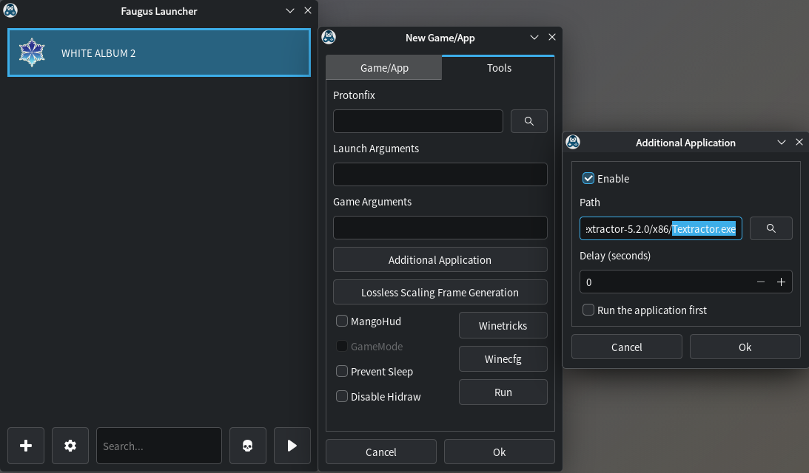

Setup: Linux
-
All guides are compiled in a single page as most will diverge to the original guide
- To avoid confusion, I'll indicate if a guide is not needed (i.e. yomitan)
-
Work In Progress
- No automated SS & audio yet
Prerequisite Packages (click here)
Prerequisite Packages
The compiled install if you are planning to follow everything:
Pacman
- 7zip (Optional)
- Flatpak
- Python (for OCR/Manga)
- Zen Browser (Optional; based on firefox)
- Fcitx5
- Mozc
- Noto Sans JP
Flatpak
- Anki
Paru (AUR)
- Faugus Launcher (For VN)
Japanese Input (click here)
Japanese Input
Japanese Input Install
- First, install the package for
fcitx5,mozcandnoto-sans jpfont - Create and open file
- Paste this config:
-
Then
CTRL + O>CTRL + X -
You can now close the terminal
Japanese Input Setup
-
relogin/restart your PC
-
KDE system settings > keyboard > virtual keyboard >
Fcitx 5 -
KDE system settings > keyboard > configure keybindings > 日本語キーボードオプション > make zenkaku hankaku an additional esc > OFF
-
KDE system settings > input method > add
Mozc(Sometimes its already there) -
KDE system settings > apperance and style > text and font > change to
Noto Sans CJK JP -
zen browser/firefox settings > change to
Noto Sans CJK JP(advanced settings)
Anki (click here)
Anki
Anki Install
- Install
Anki
Anki Setup
-
You can now follow Setup: Anki
- For step 2's extracting of
addons, go to~/.var/app/net.ankiweb.Anki/data/Anki2/
- For step 2's extracting of
-
Done!
Yomitan (click here)
Yomitan
Yomitan Setup
-
Just go straight to Setup: Yomitan PC and do the firefox way (even for zen browser)
-
Done!
Visual Novel (click here)
Visual Novel
Note that this has been only tested for non-steam VNs
Requirements
- Yomitan On PC already set-up
-
Download Textractor 5.2.0 and extract(?) (Pass:
lazyguide) -
Install
Faugus Launcher
Setting System Locale - JP
-
On your terminal go to:
-
Scroll down then uncomment(remove the #)
#ja_JP.UTF-8 UTF-8> to becomeja_JP.UTF-8 UTF-8- It is alphabetical, search carefully
-
Afterwards, run this command:
Visual Novel Setup
-
Open
Faugus Launcherthen go to settings > Global Environment Variables > Add:LC_ALL=ja_jp.UTF-8TZ=Asia/Tokyo
-
On your Faugus Launcher, click the
add (+)button > Game/App > Path > link yourVisual Novel's .exefile -
Right click your VN > Edit > Tools tab > Additional Application > Enable > Path > add your
Textractor .exe(x86 is recommended)
-
You can now follow the rest of the instructions on Setup: VN on PC starting from
step 3on Textractor- After generating text on
Textractor, the usual suspect is Info 3: Textractor not showing Japanese characters properly; square-like glyphs
- After generating text on
-
Done! Enjoy your VN
OCR (click here)
OCR
OCR Package Install
- On your terminal, paste:
OCR Setup
-
On your terminal, go to
Pythonenvironment: -
Then install
owocr -
We will be using the the default screenshot app
Spectacle>Meta + Shift + S> Options -
Set all these settings under
GeneralTab- After screenshot > Copy Image to clipboard
- Under
Region Selection>Don't do anything(both options)
-
Then go to
Save Location(2nd) Tab- Set your save location path:
"/path/to/your/OCR Picture/"- Same path for
step 10&OCR Shortcutbelow
- Same path for
- Set your save location path:
-
Shortcut
- Region Capture(領域を撮影) >
Meta + Shift + S(make this the default instead)
- Region Capture(領域を撮影) >
-
You can turn off the notification once it appears on your bottom right after capture
-
Usage:
- OCR: once captured; click
Saveand it will be automatically OCR'd - non-OCR: once captured; Either click
Copy(to clipboard) orSave as...to define a path
- OCR: once captured; click
-
You can now use
OWOCRfrom afolder(recommended) orclipboard -
Folder(save & close):
-
Clipboard:
- Done!
OCR Shortcut(auto start-up)
-
Create a shortcut file:
-
Paste this and save(folder method recommended):
-
Folder(change the path):
-
Clipboard:
-
-
KDE system settings > automatic startup > add
start_owocr.sh(will work upon restart) -
(Optional) On your taskbar find
owocr(uwu icon) > configure > engines > Primary:Chrome Screen AI& Secondary:Manga OCR (segmented) -
Done!
Manga (click here)
Manga
OCR
- Refer to OCR
Mokuro Manga (Online Processing Method)
- Follow Setup: Manga on PC - Online Processing Method as is
Mokuro Manga (Local Processing Method)
-
We can just reuse our
owocrenvironment (yes, you need env everytime to use python) -
Install mokuro
-
Two options to process, go to
terminalthen:- All Manga volumes:
- Paste:
mokuro --parent_dir F:\Manga\Saenai- Replace full directory, Saenai with your manga name(no white-spaces)
- Your vol1, 2, 3, etc. should be inside
Saenai folderin ascending uniform named order
- Paste:
- Specific Manga volume:
- Paste:
mokuro F:\Manga\Saenai\Vol3- Replace full directory, Saenai with your manga name(no white-spaces) and volume #
- Paste:
- All Manga volumes:
-
Done!
Reading Processed Manga
-
Again, just follow Setup: Manga on PC - Reading Processed Manga
-
Done!
Anime (click here)
Anime
Requirements
- Yomitan On PC already set-up
Anime Setup
-
Just go straight to Setup: Anime on PC
- Ignore the chrome/edge instructions
-
Done!
Not so lazy guide isn't it? Linux setup is finally done, how about checking Sub Guide?